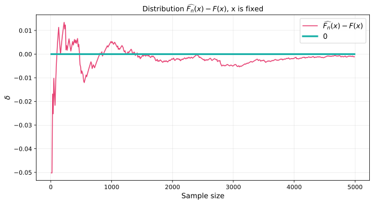

Code
def calc_Fn(sample, x):
"""
The function constructs an empirical distribution function over sample for Fn(x).
"""
return numpy.mean(sample <= x)
numpy.random.seed(42)
N = 5000
n_array = numpy.arange(10, N, 10)
# We took an exponential distribution as an example
X = expon().rvs(N)
x = 3
F_x = expon().cdf(x)
delta = []
for n in n_array:
# Calculate F_n_x from the first n generated points
F_n_x = calc_Fn(X[:n], x)
delta.append(F_n_x - F_x)
pyplot.figure(figsize=(10, 5))
pyplot.title('Distribution $\widehat{F_n}(x) - F(x)$, x is fixed', fontsize=12)
pyplot.plot(n_array, delta, c=red_pink, label='$\widehat{F_n}(x) - F({x})$')
pyplot.plot(n_array, [0] * len(n_array), c=turquoise, linewidth=3, label='0')
pyplot.legend(fontsize=12)
pyplot.xlabel('Sample size', fontsize=12)
pyplot.ylabel('$\delta$', fontsize=12)
pyplot.grid(linewidth=0.2)
pyplot.show()